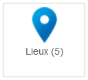
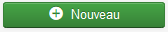
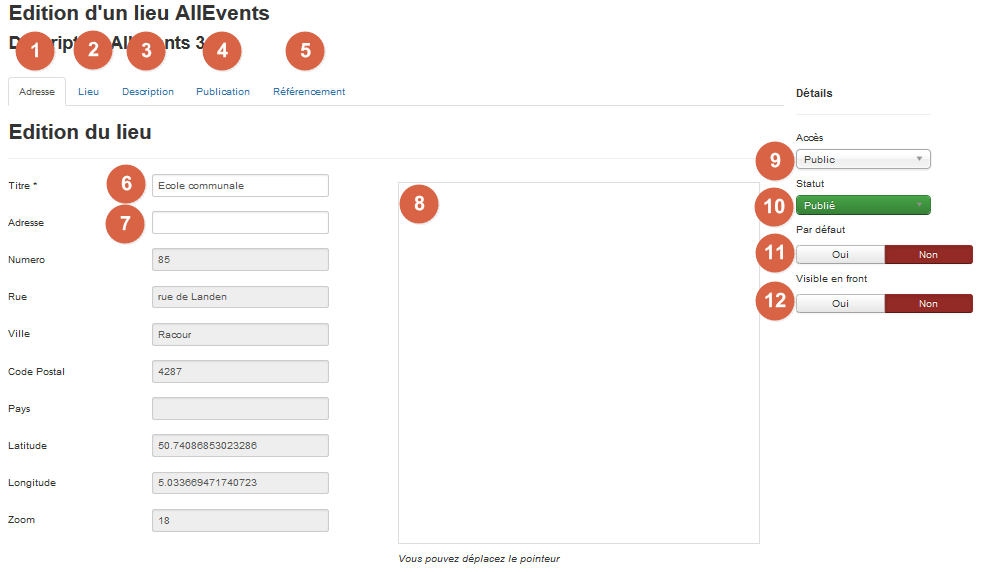

AllEvents vous permet de facilement localiser vos événements et/ou vos agendas.
Pour créer un lieu, connectez-vous à l'administration de votre site puis rendez-vous dans le menu AllEvents. Cliquez sur le pictogramme suivant : . Dans le nouvel écran qui reprend tous les lieux créés, cliquez en haut sur 
Vous obtenez l'écran suivant :

Vous pouvez donc régler ces paramètres pour votre lieu :
1 – Onglet Adresse : Rentrez ici l’adresse de votre lieu.
2 – Onglet Lieu : Rentrez ici les données complémentaires de votre lieu : adresse mail, téléphone, Puce et Vignette
3 – Onglet Description : vous pouvez inscrire une description pour votre évènement. Cette description est, comme tous les articles Joomla!, un code HTML. Cela signifie que vous pouvez écrire comme vous écririez un article en y ajoutant des liens, des images... Cette description sera affichée sur le frontend de votre site dans les pages évènement.
4 – Publication : Données générales du lieu comme le nombre de clics, date de création, date de modification.
5 – Onglet Référencement : Afin d’optimiser votre référencement, vous pouvez remplir les méta-descriptions, Mots clés et robots.
6 – Titre : donnez un titre à votre localisation.
7 – Adresse : Rentrez ici l’adresse de votre lieu. Cette adresse sera convertie en données exactes (Numéro, Rue, Ville, Code Postal, pays, Latitude, Longitude) via Google map.
8 – Carte Google map : vous pouvez remplir ici les informations relatives à Google map. Il est possible de déplacer le curseur pour affiner le lieu exact.
9 – Accès : vous pouvez déterminer un niveau d'accès pour votre lieu. Par défaut ce paramètre est réglé sur “accès public”
10 – Statut : vous pouvez déterminer le statut du lieu. Attention, si vous ne publié pas le lieu, les événements se trouvant dedans ne seront pas publiés également
11 – Par défaut : vous pouvez déterminer si le lieu est le lieu qui sera affecté par défaut à la création d’un évènement.
12 – Visible en frontend : vous pouvez déterminer si le lieu est visible en frontend. Dans la majorité des cas il reste utile qu’un lieu soit visible en frontend
Une fois que vous avez entré toutes les informations que vous souhaitez, vous n'avez plus qu'à enregistrer.
Si vous souhaitez attribuer cette carte à un événement particulier, éditez cet élément, et sélectionnez votre carte dans la rubrique lieu.